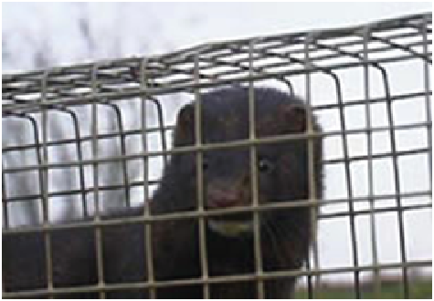

Usage
In the two-way ANOVA design, the two factors are known as factorial (i.e., there was every combination of every level of each factor). Other experimental designs feature factors that are termed nested. This is when each level of one of the factors is unique to only one level of the other factor. The difference is best illustrated with the following two experimental designs where there are two factors, A and B.
In the nested design, the levels of factor B appear in only one of the levels in factor A, not both. This often happens with factors like “site” or “area” - they usually belong to only one level of your other factor (e.g., if contrasting north and south of the harbour, a suburb could not be in both categories).
Factor B is termed nested within factor A, usually written as B(A). These designs have different sources of variance to the factorial designs, and do not have an interaction term. The designs are quite common in ecology and environmental sciences, and are often used to partition variance in spatially hierarchical sampling (e.g., habitats, areas within habitats, plots within areas etc.).
The examples below comes from an experiment investigating the impact of introduced American mink on small rodents (voles) in Finland. The hypothesis was that mink prey upon voles thereby reducing vole numbers and limiting their population size. To test this, minks were removed from large areas (> 20 km2) in the Baltic Sea. The Ho from the experiment is that the mean count of voles on islands in removal sites will be the same as the mean vole count on islands in control areas.

The data represent two treatments (mink removal and control) and two areas nested within each treatment. Then there are 10 samples in each area. Each of these samples represents the numbers of individual voles trapped on an island (all islands were more than 300 m apart ensuring some independence) over 4 nights.
The design is nested because an area cannot belong to both a removal treatment and a control. It is useful to think of areas as being the replicates for the treatment, and the individual samples as being replicates for each area.
Running the analysis
Data for a nested design should be in the format of samples as rows and variables as columns. A coloumn should correspond to the dependent variable y, in this case, number of voles. Another coloumn should contain the levels of the fixed factor A, Treatment. Finally, a column for the levels of the nested random factor B, Area.
#Input data file
Mink = read.csv(file = "Mink.csv", header = TRUE)
#Check the structure of the data
str(Mink)
## 'data.frame': 40 obs. of 3 variables:
## $ Treatment: chr "Control" "Control" "Control" "Control" ...
## $ Area : chr "area1" "area1" "area1" "area1" ...
## $ Voles : int 8 16 11 15 9 10 11 9 8 14 ...
#Run the analysis
Mink.nested = aov(Voles ~ Treatment + Area%in%Treatment, data = Mink)
summary(Mink.nested)
## Df Sum Sq Mean Sq F value Pr(>F)
## Treatment 1 1416.1 1416.1 38.39 3.81e-07 ***
## Treatment:Area 2 357.8 178.9 4.85 0.0136 *
## Residuals 36 1328.0 36.9
## ---
## Signif. codes: 0 '***' 0.001 '**' 0.01 '*' 0.05 '.' 0.1 ' ' 1
Interpreting the results
The output is a little different to the factorial ANOVA. The top section gives a significance test of the fixed effect, Treatment, - this is what we’re interested in. The residuals for this test are those associated with the random effect ‘Area’.
A significant F-ratio (P<0.05) for a nested factor indicates high variance among subgroups within a group. For example, a difference in mean vole numbers of the two areas within a treatment. This is expected, however, leads to few degrees of freedom to test main effects. Additionally, it suggests treatments may not have a uniform effect across levels of the nested factor. For example, voles in one removal area showed a stronger response than another area.
F-ratios
- Among groups = MSamong/MSsubgroup
- Factor B = MSsubgroup/MSResidual
Degrees of freedom
- Among groups = (a - 1) (where a = number of levels of Factor A)
- Among subgroups = a(b - 1) (where b = number of levels of Factor B)
- Within subgroups = ab(n - 1) (where n = sample size)
Where there are greater than 2 levels of the the fixed factor of interest, post-hoc analysis can be used to determine which groups differ. Refer to the post-hoc module for further information.
Pooling
Always examine nested factors before the upper levels. If the variance explained by the nested factor is negligible, it can be pooled. If the F ratio of MSsubgroup/MSwithin is non significant then you don’t need subgroups and can perform a one factor analysis.
Even if MSsubgroup/MSwithin is non-significant at a = 0.05, there may be subgroup effects (may be high Type II error). To be cautious, only pool SS when P>0.25, so there is very little chance that you are incorrectly accepting the null hypothesis of no effect.
Assumptions to check
The same assumptions of linear models apply to nested ANOVA’s; independence, normality and heterogeneity of variances. Indpendence needs to be considered at the design stage (see independence module). We can now check the assumptions of homgeneity of variance (namely that the residuals are homgeneous i.e., approximately equal), and normality (even disturbiton of data about the mean, no wonky outliers).
Because tests of the fixed factor A uses uses the means of the nested Factor B, the assumptions of homogeneity and normaility apply with respect to the means of Factor B. Normality of Factor A are likely to be normally distributed based upon the Central Limit Theorem.
We advocate a qualitative evalutation of the assumptions, rather than a formal test suc has Cochran’s test. Linear models in general are quite ‘robust’ for violating these assumptions (heterogeneity and normality), within reason.
The assumption of normality can be checked by a frequency histogram of the residuals or using a quantile plot where the residuals are plotted against the values expected from a normal distribution. The historgram of residuals should follow a normal distribution. If the points in the quantile plot lie mostly on the line, the residuals are normally distributed. Violations of normality can be fixed via transformations or by using a different error-distribution in a GLM. See the GLM module for more information. The plot() function on a model object provides a series of four graphical model diagnostics, the second of which is a quantile plot.
hist(Mink.nested$residuals)

plot(Mink.nested,which=2)

Heterogenous variances is indicated by non-random pattern in the residuals vs. fitted plot. If there is strong patterns, one potential solution is to transform the response variable y. If this doesn’t fix the problem the best solution is to use a different error disturbiton in a gnerealised linear model framework (GLM).
plot(Mink.nested$residuals~Mink.nested$fitted)

#Alternative option
plot(Turtles.ANOVA,which=1)
Communicating the results
Written The subgroup factor is rarely of interest and so is given little emphasis in the results. For example, the abundance of voles was significantly greater where minks have been removed (F = 38.39, P <0.001).
Visual A boxplot would be a suitable means of displaying the differences between the groups of the factor of interest, in this case Treatment.
Further help
Type ?aov to get the R help for this function.
Quinn and Keough (2002) Experimental design and data analysis for biologist. Cambridge University Press
McKillup (2012) Statistics explained. An introductory guide for life scientists Cambridge University Press